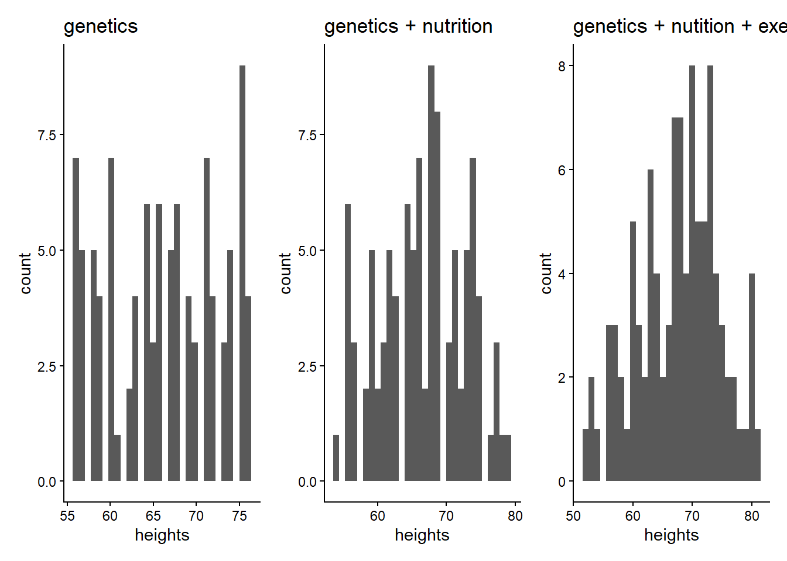

set.seed(4)
library(tidyverse)── Attaching core tidyverse packages ──────────────────────── tidyverse 2.0.0 ──
✔ dplyr 1.1.4 ✔ readr 2.1.5
✔ forcats 1.0.0 ✔ stringr 1.5.2
✔ ggplot2 4.0.1 ✔ tibble 3.3.0
✔ lubridate 1.9.4 ✔ tidyr 1.3.1
✔ purrr 1.1.0
── Conflicts ────────────────────────────────────────── tidyverse_conflicts() ──
✖ dplyr::filter() masks stats::filter()
✖ dplyr::lag() masks stats::lag()
ℹ Use the conflicted package (<http://conflicted.r-lib.org/>) to force all conflicts to become errorslibrary(ggplot2)
library(patchwork)
sim_heights <- c()
avg_height = 66
for (person in 1:100){
genes <- sample(-10:10, size=1)
sim_heights[person] <- avg_height + genes
}
df1 <- tibble(heights = sim_heights)
plot1 <- ggplot(df1, aes(x=heights)) + geom_histogram() + theme_classic() + labs(title="genetics")
for (person in 1:100){
genes <- sample(-10:10, size=1)
nutrition <- sample(-3:3, size=1)
sim_heights[person] <- avg_height + genes + nutrition
}
df2 <- tibble(heights = sim_heights)
plot2 <- ggplot(df2, aes(x=heights)) + geom_histogram() + theme_classic() + labs(title="genetics + nutrition")
for (person in 1:100){
genes <- sample(-10:10, size=1)
nutrition <- sample(-3:3, size=1)
exercise <- sample(-5:5, size=1)
sim_heights[person] <- avg_height + genes + nutrition + exercise
}
df3 <- tibble(heights = sim_heights)
plot3 <- ggplot(df3, aes(x=heights)) + geom_histogram() + theme_classic() + labs(title="genetics + nutition + exercise")
plot1+plot2+plot3`stat_bin()` using `bins = 30`. Pick better value `binwidth`.
`stat_bin()` using `bins = 30`. Pick better value `binwidth`.
`stat_bin()` using `bins = 30`. Pick better value `binwidth`.